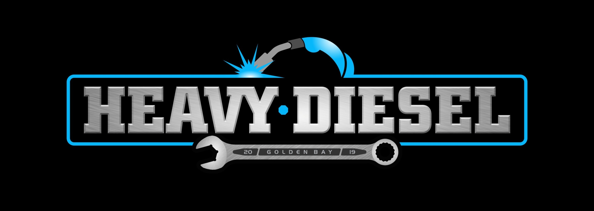
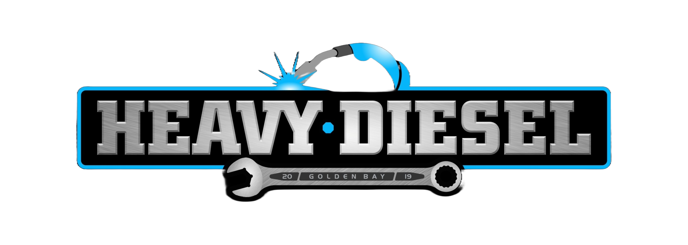

Truck Servicing & Repair
Preventative servicing, fault finding and repairs for heavy vehicles that need to stay productive on local roads and worksites.

Heavy vehicle service, repair & diagnostics
Practical diesel mechanical support for trucks, machinery, tractors and hydraulics, with onsite work, breakdown response and after-hours support when the job cannot wait.

Workshop capability
Preventative servicing, fault finding and repairs for heavy vehicles that need to stay productive on local roads and worksites.
Mechanical support for plant, machinery and tractors, from routine service work through to practical repair solutions.
Hydraulic diagnostics and repair work for trucks, equipment and machinery where pressure, flow and reliability matter.
Diagnostic support for truck and hydraulic faults, helping identify the source of issues before downtime stacks up.
Compliance support
Get heavy vehicles checked before inspection, with repair capability available when something needs attention. Brake roller testing helps give a clearer picture of brake performance before it becomes a bigger problem.
Parts, tyres & lubricants
Heavy Diesel Golden Bay can source and supply parts, provide a wide range of heavy vehicle tyres, and supplies quality Shell lubricants for demanding diesel equipment.
Mechanical support where the machine is, reducing unnecessary transport and downtime.
Responsive help for breakdown situations, including after-hours support when arranged.
Supplier of quality Shell lubricants for trucks, machinery and heavy-duty use.
Parts sourcing and supply, plus a wide range of heavy vehicle tyres.
Talk to the team
Contact Heavy Diesel Golden Bay for workshop bookings, onsite work, hydraulic diagnostics, brake testing, parts, tyres and lubricant supply.